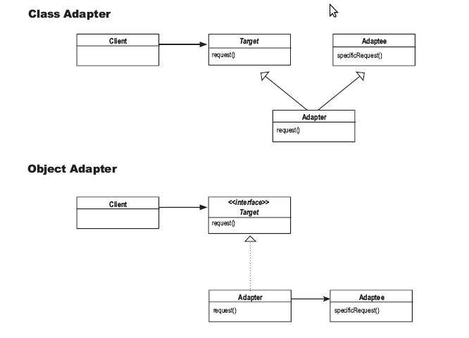

Adapter Pattern converts the interface of a class into another interface the clients expect. Adapter lets classes work together that couldn’t otherwise because of incompatible interfaces.
适配器模式 将一个类的接口转换为 客户期待 的另一个接口. 适配器使得本来由于接口不匹配而不能工作在一起的类可以工作在一起.
鸭子和火鸡两个不同接口的类, 由于用户只知道鸭子类,所以当用户需要使用相同的接口来调用火鸡类时, 需要 适配器模式 来进行处理.
适配器模式的类图如下:
其中基于对象的 适配器模式 采用 组合 的方式, 而基于类的 适配器模式 采用 继承 的方式(多重继承).
下载请点击 这里
1 2 3 4 5 6 7 8 9 10 11 12 13 14 15 16 17 18 19 20 21 22 23 24 25 26 27 28 29 30 31 32 33 34 35 36 37 38 39 40 41 42 43 44 45 46 47 48 49 50 51 52 53 54 55 56 57 58 59 60 61 62 63 64 65 66 67 68 69 70 71 72 73 74 75 76 77 78 79 80 81 82 | #include <iostream>
#include <string>
using namespace std;
class Duck
{
public:
virtual void quack(){}
virtual void fly(){}
};
class Turkey
{
public:
virtual void gobble(){}
virtual void fly(){}
};
class MallardDuck:public Duck
{
public:
void quack(){cout<<"Quack"<<endl;} // the concrete class
void fly(){cout<<"I'm flying"<<endl;}
};
class WildTurkey:public Turkey
{
public:
void gobble(){cout<<"Gobble gobble"<<endl;}
void fly(){cout<<"I'm flying a short distance."<<endl;}
};
class DuckAdapter:public Duck
{
public:
Turkey *turkey;
DuckAdapter(Turkey *turkey)
{
this->turkey = turkey;
}
void quack(){turkey->gobble();}
void fly()
{
for(int i=0; i<5; i++) // turkey cannot fly very long, so fly 5 times to get the duck's distance
turkey->fly();
}
};
class DuckAdapter_MI:public Duck, public WildTurkey // using Multi-Inheritance
{
public:
void quack(){gobble();}
void fly()
{
for(int i=0; i<5; i++)
WildTurkey::fly();
}
};
int main()
{
cout<<"############# The real duck start #####################"<<endl;
MallardDuck duck;
duck.quack();
duck.fly();
cout<<"############# The real turkey start #####################"<<endl;
WildTurkey turkey;
turkey.gobble();
turkey.fly();
cout<<"############# The fake duck(turkey) start based on composition #####################"<<endl;
DuckAdapter fakeDuck(&turkey); // make the turkey have the same interface with duck
fakeDuck.quack();
fakeDuck.fly();
cout<<"############# The fake duck(turkey) start based on inheritance #####################"<<endl;
DuckAdapter_MI fakeDuck2; // multi-inheritance
fakeDuck2.quack();
fakeDuck2.fly();
return 0;
}
|
输出结果为:
############# The real duck start #####################
Quack
I'm flying
############# The real turkey start #####################
Gobble gobble
I'm flying a short distance.
############# The fake duck(turkey) start based on composition #####################
Gobble gobble
I'm flying a short distance.
I'm flying a short distance.
I'm flying a short distance.
I'm flying a short distance.
I'm flying a short distance.
############# The fake duck(turkey) start based on inheritance #####################
Gobble gobble
I'm flying a short distance.
I'm flying a short distance.
I'm flying a short distance.
I'm flying a short distance.
I'm flying a short distance.
Decorator模式 与 Adapter模式 及 Facade模式 区别: